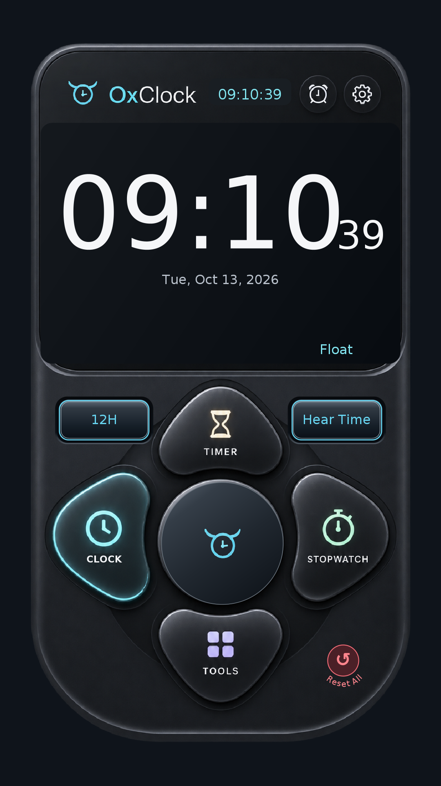
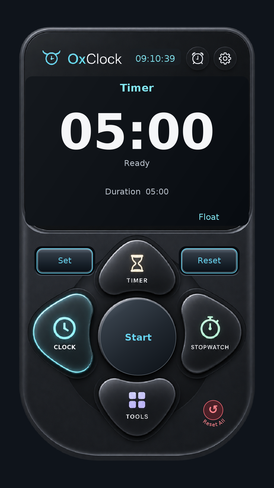
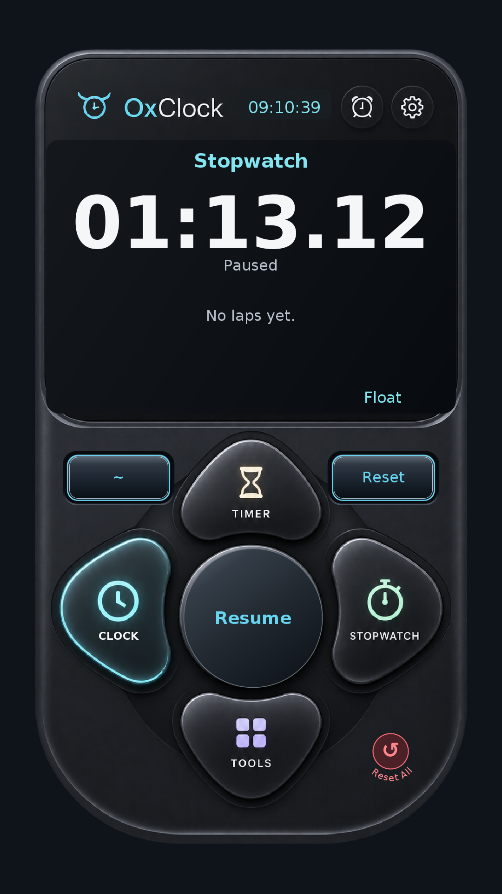
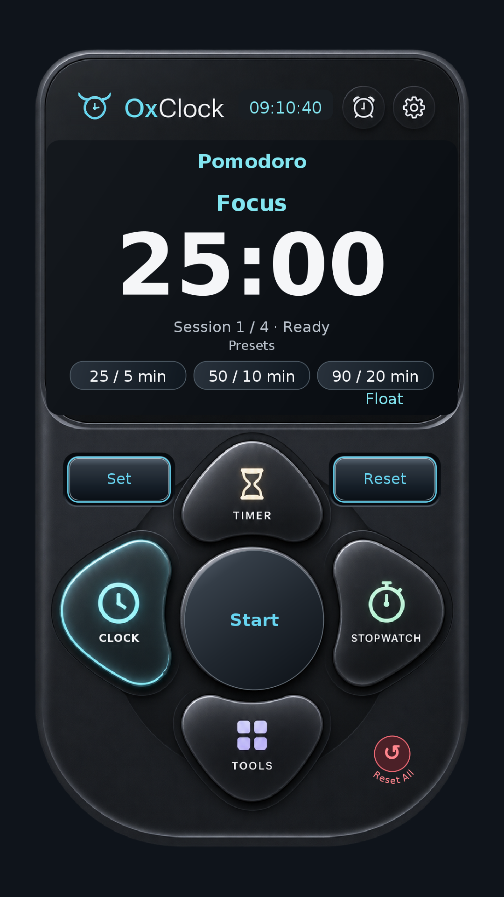
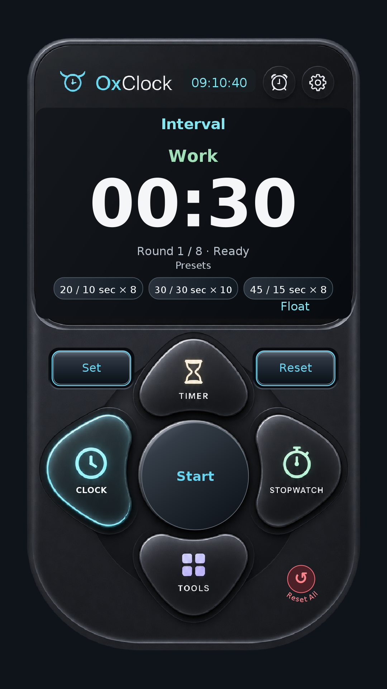
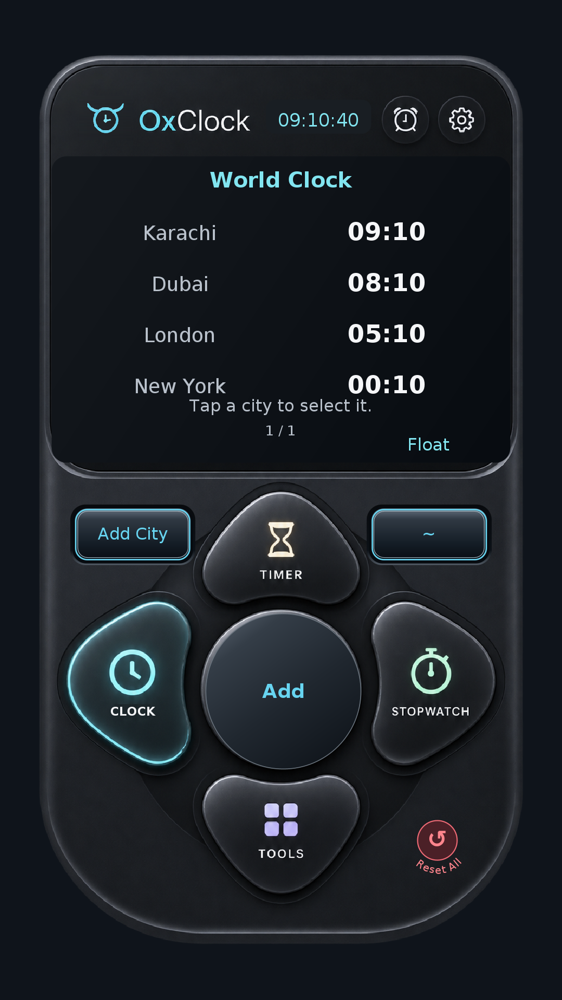
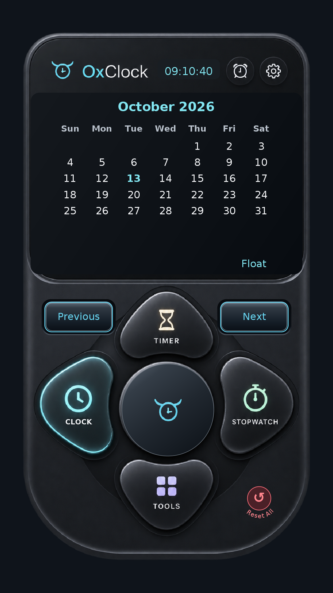
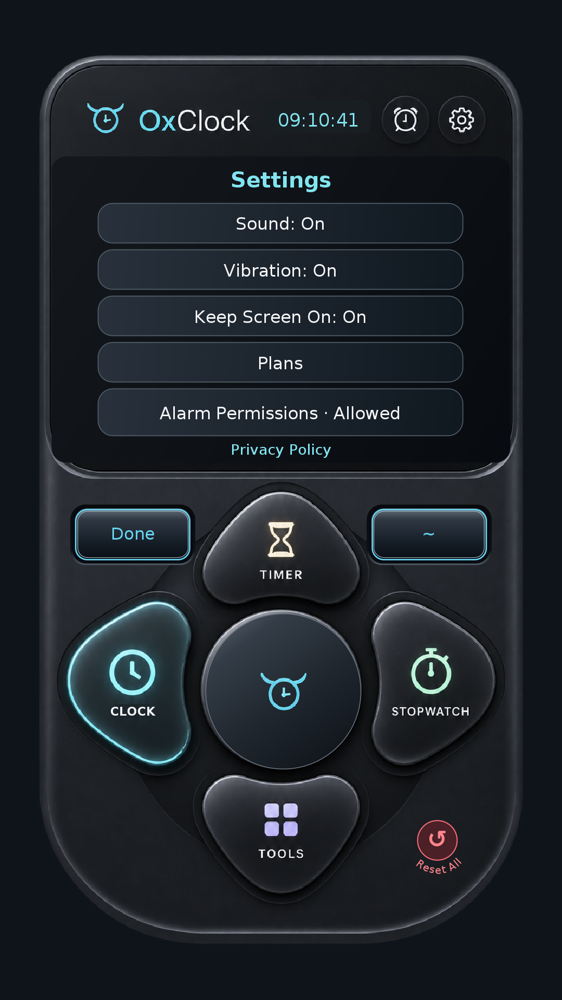

Clock & Time Formats
12H / 24H toggle, persistent header clock, cyan falling-digit thank-you animation on tap.
All Your Time Tools in One Gadget
A compact floating control center for time — timers, stopwatch, world clocks, pomodoro, intervals, calendar, alarms, and tasbeeh counter. All in one precise, offline-first gadget that lives on your screen.
Every tool runs in the same compact display — switch instantly, no context lost.
12H / 24H toggle, persistent header clock, cyan falling-digit thank-you animation on tap.
Hours/minutes/seconds fields, quick 1/5/10/30-min presets, up to 99:59:59, hold ± to repeat, editing pauses active countdown.
Four compact lap rows under main readout, split + cumulative time, browse additional laps in-display, immediate reset.
Offline global search (634+ cities), QWERTY keys in-display, 4 saved cities per page, DST handled, no network required.
Pomodoro: 25/5/15×4, 50/10/30×4, 90/20/30×2 presets. Interval: 20/10×8, 30/30×10, 45/15×8. Auto-continue across tools.
Set time, cyan ring + green dot + ON badge when enabled, snooze 5 min, foreground alerts with sound loop until stop/snooze.
Month view with previous/next navigation, thank-you animation on center tap, no network, local only.
+1 tap, undo, immediate reset, persists across sessions. Clean, distraction-free counting.
One-tap session reset: stops timer/stopwatch, clears laps/counter, disables alarm/snooze, preserves settings & cities.
Every tool shares the same compact display — consistent, predictable, fast.








Built for precision, tested for reliability.
Android 8.0+ (API 26+), compiled with SDK 36
Single Activity, Canvas-based rendering over approved artwork, no fragments
Zero network permissions, bundled city catalogue (634+), local voice packs
Synthesized piezo buzzer (raw), Kokoro Michael voice (normal speed), alarm audio stream
135 interaction assertions, 228 cycle assertions, 674 city/DST assertions, 112 layout assertions
Gradle, Java 17, debug-signed for alpha; release key delivered separately
Current alpha release: 0.13 Play build — signed AAB, SDK 36, offline privacy policy. Debug APK included for testing.
Debug APK available in releases/OxClock-0.13-Play-Test.apk of the source repository.